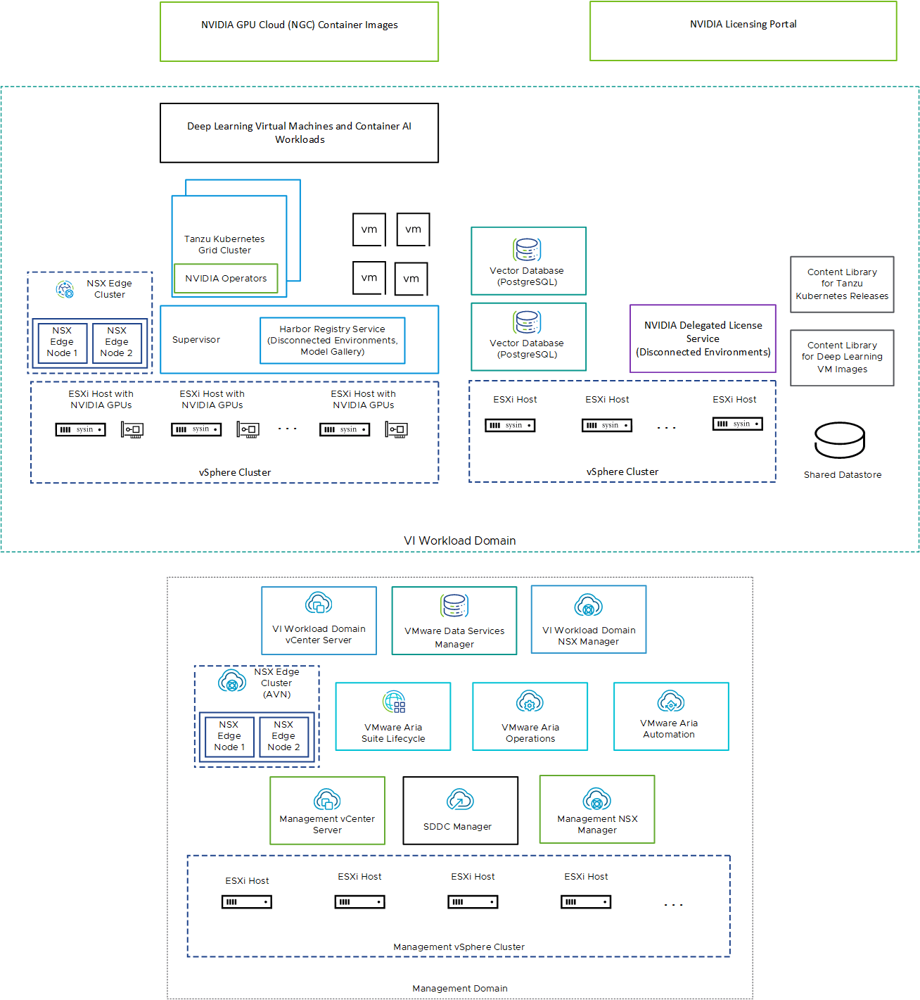

请访问原文链接：VMware Private AI Foundation with NVIDIA - 生成式人工智能解决方案 查看最新版。原创作品，转载请保留出处。
生活本不易，原创更不易。还请友商高抬贵手，尊重彼此的劳动成果。谢谢🙏
作者主页：sysin.org
VMware Private AI Foundation with NVIDIA
通过联合生成式 AI 平台解锁生成式人工智能并释放生产力。解决隐私、选择、成本、性能和合规性问题。

解锁新一代人工智能并释放生产力

实现隐私、安全和合规性
使用人工智能服务的架构方法来实现企业数据的隐私、安全和控制。

获得加速性能
借助 VMware Cloud Foundation 和 NVIDIA AI Enterprise 中的集成软件和硬件功能，从生成式 AI 模型中获取最佳性能。

简化生成式 AI 部署并优化成本
利用矢量数据库、深度学习虚拟机等特殊功能，获得简化的部署体验和显着的成本效率。
构建和部署私有且安全的生成式 AI 模型

引导式部署
通过工作负载域和相关组件的引导式部署 (sysin)，显着提高部署速度

用于启用 RAG 工作流程的矢量数据库
通过 PostgreSQL 上的 pgvector 支持的矢量数据库，实现数据快速查询和实时更新，以增强 LLMs 的输出。

目录设置向导
通过精心策划和优化的 AI 基础设施目录项，简化复杂项目的基础设施配置。

GPU 监控
通过跨集群和主机查看 GPU 资源利用率来简化 GPU 使用，从而获得优化的性能和成本。

深度学习虚拟机模板
使用预配置的深度学习虚拟机提高环境的一致性。

NVIDIA Nemo Retriever
通过一系列 NVIDIA CUDA-X生成式 AI 微服务增强 RAG 功能 (sysin)，使组织能够将自定义模型无缝连接到不同的业务数据。

NVIDIA NIM Operator
使用 NVIDIA AI 工作流程示例简化 RAG 应用程序部署到生产中，无需重写代码。

NVIDIA NIM
通过一组易于使用的微服务实现大规模无缝 AI 推理，这些微服务旨在加速生成式 AI 在企业中的部署。

NVIDIA GPU Operator
自动管理将 GPU 与 Kubernetes 结合使用所需的软件的生命周期。提高 GPU 性能、利用率和遥测。
系统架构
System Architecture of VMware Private AI Foundation with NVIDIA
VMware Private AI Foundation with NVIDIA runs on top of VMware Cloud Foundation adding support for AI workloads in VI workload domains with vSphere IaaS control plane provisioned by using kubectl and VMware Aria Automation .
Example Architecture for VMware Private AI Foundation with NVIDIA

| Component | Description |
|---|---|
| GPU-enabled ESXi hosts | ESXi hosts that configured in the following way: Have an NVIDIA GPU that is supported for VMware Private AI Foundation with NVIDIA. The GPU is shared between workloads by using the time slicing or Multi-Instance GPU (MIG) mechanism. Have the NVIDIA vGPU host manager driver installed so that you can use vGPU profiles based on MIG or time slicing. |
| Supervisor | One or more vSphere clusters enabled for vSphere IaaS control plane so that you can run virtual machines and containers on vSphere by using the Kubernetes API. A Supervisor is a Kubernetes cluster itself, serving as the control plane to manage workload clusters and virtual machines. |
| Harbor registry | A local image registry in a disconnected environment where you host the container images downloaded from the NVIDIA NGC catalog. |
| NSX Edge cluster | A cluster of NSX Edge nodes that provides 2-tier north-south routing for the Supervisor and the workloads it runs.The Tier-0 gateway on the NSX Edge cluster is in active-active mode. |
| NVIDIA Operators | NVIDIA GPU Operator. Automates the management of all NVIDIA software components needed to provision GPU to containers in a Kubernetes cluster. NVIDIA GPU Operator is deployed on a TKG cluster. NVIDIA Network Operator. NVIDIA Network Operator also helps configuring the right mellanox drivers for containers using virtual functions for high speed networking, RDMA and GPUDirect.Network Operator works together with the GPU Operator to enable GPUDirect RDMA on compatible systems. NVIDIA Network Operator is deployed on a TKG cluster. |
| Vector database | A PostgreSQL database that has the pgvector extension enabled so that you can use it in Retrieval Augmented Generation (RAG) AI workloads. |
| NVIDIA Licensing Portal NVIDIA Delegated License Service (DLS) | You use the NVIDIA Licensing Portal to generate a client configuration token to assign a license to the guest vGPU driver in the deep learning virtual machine and the GPU Operators on TKG clusters. In a disconnected environment or to have your workloads getting license information without using an Internet connection, you host the NVIDIA licenses locally on a Delegated License Service (DLS) appliance. |
| Content library | Content libraries store the images for the deep learning virtual machines and for the Tanzu Kubernetes releases. You use these images for AI workload deployment within the VMware Private AI Foundation with NVIDIA environment. In a connected environment, content libraries pull their content from VMware managed public content libraries. In a disconnected environment, you must upload the required images manually or pull them from an internal content library mirror server. |
| NVIDIA GPU Cloud (NGC) catalog | A portal for GPU-optimized containers for AI, and machine learning that are tested and ready to run on supported NVIDIA GPUs on premises on top of VMware Private AI Foundation with NVIDIA. |
As a cloud administrator (sysin), you use the management components in VMware Cloud Foundation
| Management Component | Description |
|---|---|
| SDDC Manager | You use SDDC Manager for the following tasks: Deploy a GPU-enabled VI workload domain that is based vSphere Lifecycle Manager images and add clusters to it. Deploy an NSX Edge cluster in VI workload domains for use by Supervisor instances and in the management domain for the VMware Aria Suite components of VMware Private AI Foundation with NVIDIA. Deploy a VMware Aria Suite Lifecycle instance which is integrated with the SDDC Manager repository. |
| VI Workload Domain vCenter Server | You use this vCenter Server instance to enable and configure a Supervisor. |
| VI Workload Domain NSX Manager | SDDC Manager uses this NSX Manager to deploy and update NSX Edge clusters. |
| VMware Aria Suite Lifecycle | You use VMware Aria Suite Lifecycle to deploy and update VMware Aria Automation and VMware Aria Operations. |
| VMware Aria Automation | You use VMware Aria Automation to add self-service catalog items for deploying AI workloads for DevOps engineers and data scientists. |
| VMware Aria Operations | You use VMware Aria Operations for monitoring the GPU consumption in the GPU-enabled workload domains. |
| VMware Data Services Manager | You use VMware Data Services Manager to create vector databases, such as a PostgreSQL database with pgvector extension. |
VMware 相关组件
VMware Components in VMware Private AI Foundation with NVIDIA
VMware Cloud Foundation 5.2
The functionality of the VMware Private AI Foundation with NVIDIA solution is available across several software components.
- VMware Cloud Foundation 5.2
- VMware Aria Automation 8.18
- VMware Aria Operations 8.18
- VMware Data Services Manager 2.1
VMware Cloud Foundation 5.1
The functionality of the VMware Private AI Foundation with NVIDIA solution is available across several software components.
- VMware Cloud Foundation 5.1.1
- VMware Aria Automation 8.16.2 and VMware Aria Automation 8.17
- VMware Aria Operations 8.16 and VMware Aria Operations 8.17.1
- VMware Data Services Manager 2.0.x
准备好开始了吗？
VMware Private AI Foundation with NVIDIA 支持两种用例：
开发用例
云管理员和 DevOps 工程师可以以深度学习虚拟机的形式配置 AI 工作负载，包括检索增强生成 (RAG)。数据科学家可以使用这些深度学习虚拟机进行人工智能开发。生产用例
云管理员可以为 DevOps 工程师提供具有 NVIDIA 环境的 VMware Private AI Foundation，以便在 vSphere IaaS 控制平面上的 Tanzu Kubernetes Grid (TKG) 集群上调配生产就绪的 AI 工作负载。
相关产品：
- VMware Cloud Foundation 5.2 - 领先的多云平台
- VMware Aria Suite 8.18 下载汇总 - 云管理解决方案
- VMware Data Services Manager 9.1 发布 - 数据库和数据服务管理
- VMware vSphere 8.0 Update 3k 下载 - 企业级工作负载平台
- VMware Tanzu Kubernetes Grid (TKG) 2.5.2 - 企业级 Kubernetes 解决方案

文章用于推荐和分享优秀的软件产品及其相关技术，所有软件提供免费版或试用版。内容若侵犯了您的版权，请联系作者删除。如果您喜欢这篇文章，或者觉得它对您有所帮助，亦或发现有不当之处；欢迎发表评论，也欢迎分享这个网站，或者赞赏一下，谢谢！提示：捐赠或赞赏属于自愿赠予行为，提交后即表示您对作者的支持与认可。为避免误操作，请在确认前仔细检查金额，支付完成后将无法撤销或退还。
 支付宝赞赏
支付宝赞赏  微信赞赏
微信赞赏赞赏一下
敬请注册！点击 “登录” - “用户注册”（已知不支持 21.cn/189.cn 邮箱）。 请勿使用联合登录（已关闭）。